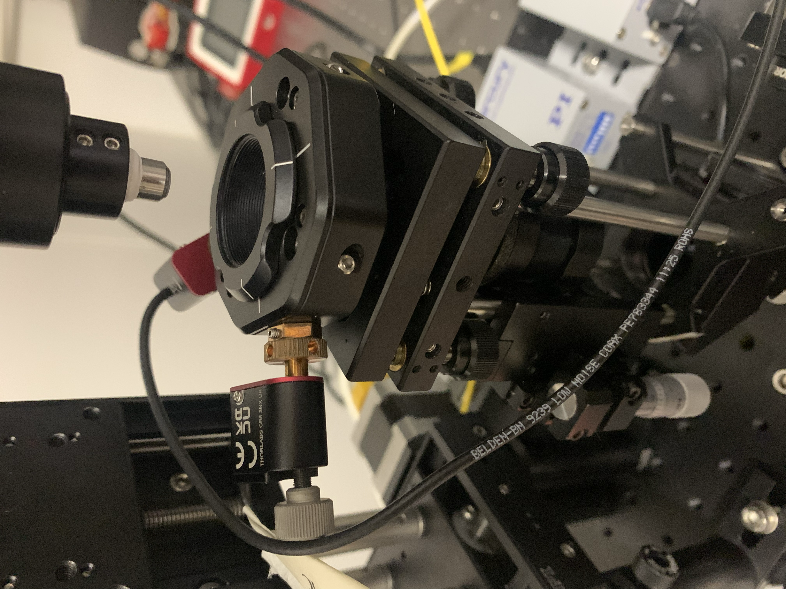

Technical Projects
Practical work in sensor characterization, ultrasound signal processing, and image processing.
Ultrasound transducer characterization
The experimental setup used to characterize the ultrasound transducer using hydrophone.
Project link →
Pulse-echo measurements platform
The pulse echo measurements platform for characterizing polymer films of the optical ultrasound sensor with 1 um scan resolution.
Project link →
Sensitivity and frequency response measurements of optical ultrasound sensor
The acousto-optical characterization platform aimed at measuring the sensitivity and frequency response of the fabricated optical-ultrasound sensor.
Project link →
2D / 3D image reconstruction of photoacoustic tomography
Reconstruction pipelines turning raw acoustic data into interpretable ultrasound images.
in the progress →
Scanning the sensor using the piezoelectric motor
A scanning platform that measures the homogeneity of the sensor surface and determines the optimal wavelength
Project link →
The user interface for controlling the acousto-optical characterization platform
Main Features: 1. Communicate with the instrument. 2. Integrate the instruments with each other. 3. Acquire the measured data. 4. Visualize the measured data. 3. Sensitivity measurement analysis. 4. Acoustic/michanical characterization based on the time-of-flight method
Project link →